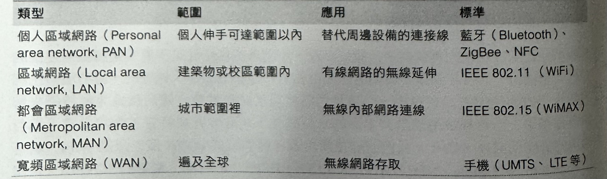
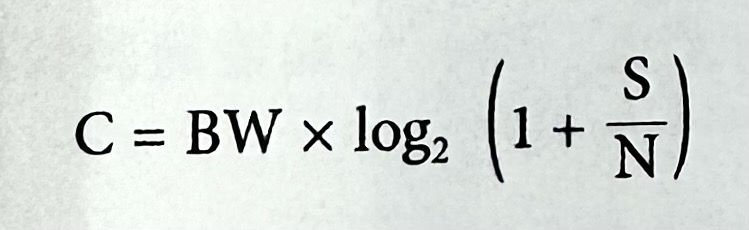
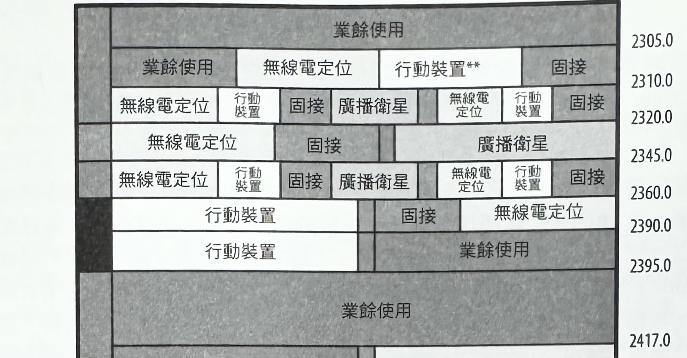
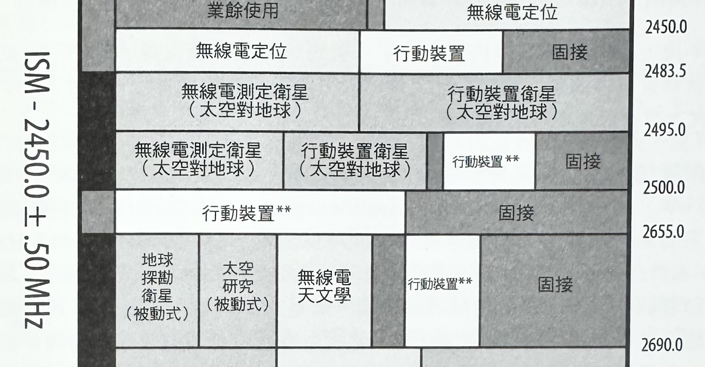
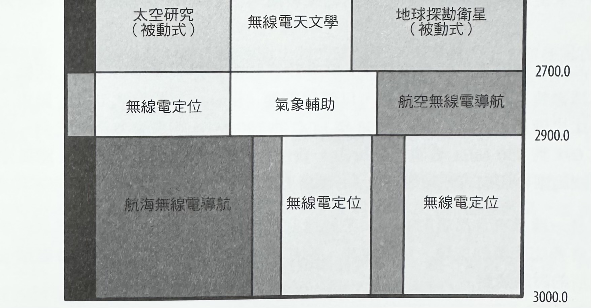
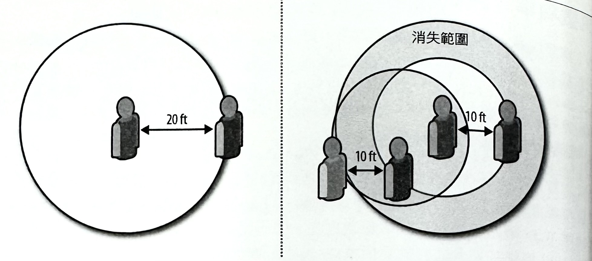

1-18-6 無線網路效能-簡介無線網路
普適連線（Ubiquitous Connectivity）
過去十年，變革最大的科技趨勢之一，就是對於隨處連線的可用性和成長性。無論是收發電子郵件、承載語音通話、網頁瀏覽，或是其他的各種使用情況，我們期望能在跑步、排隊、辦公、搭地鐵、搭飛機，以及這些過程中的任何地方，都可以不受地點、時間，或環境的限制，而隨時隨地地存取這些線上服務。如今，我們仍然常常被迫去主動尋找可用的連線（例如，尋找就近的WiFi熱點），但毫無疑問地，未來將會是個能隨時隨地連上網際網路的普適連線世界。
無線網路正處於這樣的趨勢當中。廣泛來說，所謂無線網路就是不需透過線來連接的任何一種網路，而這正滿足了使用者所渴望的方便性和機動性。無疑的，目前雖然已經有許多不同的使用方式和應用，但是我們仍然期望能有更多不同的無線連線技術來解決各種需求。而每種技術都具有本身的效能特性，並且會針對特定工作和內容，進行個別的最佳化處理。如今，我們已經在使用著各種類型的無線技術：像是WiFi、藍牙（Bluetooth）、ZigBee、NFC、WiMAX、LTE、HSPA、EV-DO、較早的 3G 標準、衛星服務等等。
無線網路的類型有很多種，因此它們的效能表現也就各有差異。不過，所幸大多數的無線技術都是以共同的原理來運作、擁有共同的處理成本，並受限於共同的效能規範與限制。一旦我們發現並瞭解這些無線效能的基本原則，那麼其他的問題自然就全都能迎刃而解了！
此外，雖然透過無線電通訊方式的資料傳送機制所界定的範圍基本上都不一樣，但是從使用者的經驗來看，最後結果則是，也應該是完全相同的一具有相同的效能，也擁有相同的結果。從長過來看，所有的應用程式都將會透過無該網路來進行傳輸一或許應該這樣說：某些時候復有可能會比過去更常透過無線方式來進行存取。所有的應用程式都已經具有無線傳輸能力，因此也就不用再去區分什麼有線（wired）或無線 （wireless）應用程式了。
無論使用哪種連線方式，所有的應用程式都應該能夠順利運作，以使用者的角度來看，你應該不需要去在意使用的是哪一種底層技術，不過就開發者而言，我們就必須為我們的應用程式，預先考慮到它們在不同網路類型之間的差異，進而規劃出最佳的建構方式。所幸，我們運用在無線網路上的每一種最佳化方式，都將會在所有情況下，轉化成更好的經驗。就讓我們開始吧！
無線網路的類型
網路是一連串相互連接的裝置。在無線網路的場合當中，無線電通訊（radio communication）通常是首選媒介。然而，在以無線電驅動（radio-powered）的範疇當中，有幾十種專為不同規模、分佈方式，以及完全不同的場合所設計的技術。用來描述其差異性的其中一種方法，就是根據它們的「地理範圍」為基礎來區分使用狀況：
表1: 無線網路的類型
上述分類方式既不完鳖，也不全然正確。許多技術和標準一開始都是先針對特定使用場合和時機，而逐漸提升更多性能、可達範圍，以及總傳輸量一像是針對 PAN應用，要用來取代連接線的藍牙技術（Bluetooth）。事實上，在最新的藍牙草案當中，已經有針對高頻寬使用場合，來提供與802.11（WiFi）的無縫互用規範了。同樣地。如 WiMAX 之類的技術原本是要當作固定無線傳輸的解決方案，但隨著時間的推移，則因為獲得觀外的行動能力，而讓它們變成是其他 WAN 和手機技術的可用替代方案。
分類的重點並不是要把每一種技術給劃分成個別獨立的封閉領域，而是要強調在每個使用場合裡的層次差異而已。有些裝置有其持續電力來源；其他裝置則必須卯足全力地在電池壽命上進行最佳化。有些裝置需要用到 Gbit/s+ 的資料傳輸速率；其他裝置則是被設計成只需傳輸成千或數百個位元組的資料（如 NFC）。有些應用需要持續保持連線狀態，而其他應用則可以容許傳輸上的延遲狀況。這些以及許多規範，決定了每一種網路類型的最初特質。然而，一旦就定位之後，每一種標準都會開始持續進化：更好的電池容量、更快的處理器、改良過的謂節演算法，以及其他進階功能，來持續擴展每一種無線標準的使用場合和執行效能。
你的下一個應用程式有可能會透過行動網路來進行傳輸，但也可能是搭配 NFC 來進行付款、透過藍牙來進行 WebRTC 的 P2P 通訊，或者以 WiFi 來進行高畫質影音串流。這並不是什麼取捨或賭注問題，就單純只是一種無線的基本表現而已！
無線網路的效能基本原則
每一種無線技術類型，都有其各自的限制與侷限。不過，無論使用的是哪一種無線技術，所有的通訊方法都會以相同的基本原理，來決定出最大頻道容量（channelcapacity）。事實上，Claude E. Shannon（美國數學家、電子工程師和密碼學家）提出了一個可用來算出頻道容量的明確數學公式（請參考公式-1），而且是無論使用的是哪種技術都合用的公式。
公式1: 頻道容量就是訊息傳輸速率的最大值
- C 是頻道容量（capacity），而它的單位是每秒幾位元（bits）。
- BW 是可用頻寬 （bandwidth），而單位是赫茲（hertz， 簡稱 Hz）。
- S 是訊號（signal），N 是雜訊 （noise），而單位是瓦特（watts）。
雖然上述公式看上去有點簡略，但卻已經抓到我們需要去瞭解大多數無線網路效能的所有重要見解。不管規格的名稱、縮寫，或是版本編號，在可達成的資料速率上的兩個基本限制，就是接收者和傳送者之間的可用頻寬量和訊號功率。
頻寬（Bandwidth）
與每個網路節點之間都會有條專屬纜線可供傳輸的有限範圍所不同的是，無線電通出無線通訊本質上就是一種共用的媒介一也就是「無線電波」（radio wave），或者是你所認為的「電磁輻射」（electromagnetic radiation）。發送者和接收者兩邊都必須同意在即將 發生的通訊作業上，採用特定的頻率範圍（frequency range）。有明確定義的範圍才能在 裝置之間進行無縫地交互作用。比如說，802.116 和 802.11g 標準都會讓所有的 WiFi 裝置，採用 2.4 到 2.5 GHz 的波段。
那麼，是誰決定這樣的頻率範圍和它的分配情況的呢？簡單來說，就是當地政府（參考圖-1）。在美國，這個程序是由美國聯邦通信委員會（FCC- Federal CommunicationsCommission）所負責控管。事實上，由於不同的政治規範，有些無線技術在世界的部分地區或許可順利運作，但某些地方就是不行。不同國家可能會，甚至經常會針對同一種無線技術，指派不同的波段範圍。
先撇開政策部分不談，除了要擁有一個共同波段來進行相互傳輸以外，最重要的效能因子是被指定的頻寬範圍大小。根據 Shannon 的模型顯示，整個頻道的位元速率是直接與指定範圍大小成正比的。因此，在所有條件全都相同的情況下，可用頻率範圍每增加一倍，資料傳輸率也就會跟著加倍一也就是說，頻寬從 20 提升到 40 MHz，就可以增加一倍的頻道資料速率，而這也就是 802.11n 之所以能夠比先前的 WiFi 標準，提高其效能的真正原因！
最後，值得注意的是，並非所有的頻率範圍都能具有相同的效能。低頻訊號（low-frequency signals），低頻訊號可傳得更遠，涵蓋範圍更大（macrocells， 宏蜂巢技術），而所需要的代價是更大的天線和更多客戶端的存取競爭狀況。相反地，高頻訊號（high- frequency signals）可以傳輸更多資料，但傳輸距離不能太遠，以致於涵蓋範圍較小（microcells， 微蜂巢技術），而且需要更多的基礎建設。
某些頻率範圍對於某些應用來說，會比其他範圍還來得有價值。像廣播電台之類的廣播專屬應用（broadcast-only application），就很適合使用低頻範圍。另外，雙向通訊則適合採用可提供較高頻寬，且較少競爭狀況的小型裝置。
圖1: 美國聯邦通信委員會（FCC）無線電頻道配置情況（針對 2,300 - 3,000MHz 波段）
  淺談全球頻道配置與管理的紛紛擾擾
如果你開始花時間去瞭解無線通訊的世界的話，你將在針對目前頻道配置 （spectrum allocation）和管理程序的狀況與功過方面，不可避免地陷入眾多爭論 的泥淖當中。但是，究竟整個來龍去脈是如何呢？
在早期的廣播年代，任何人都可以針對自己所需要的用途，去使用任何一種頻道範圍。當 1912年，廣播法被簽署到美國的法律當中，並且被要求無線電頻道得經過授權才能使用後，一切全都改變了。最初法案的部份動機，起於鐵達尼號（Titanic）沉船事件的調查過程。有些人認為，假如適當的頻率能被所有附近的船隻所掌握的話，這場災難本可避免，或者會有更多人獲救。無論如何，這個新的法律開創了無線通訊的國際和聯邦法律上的先例。而其他國家也相繼跟進。
數十年後，1934 年的通訊法案創立了「美國聯邦通信委員會」（FCC），並且讓 FCC 負責管理美國國內頻道分配工作，進而透過針對專用情況，細分成更小區段的方式，來有效地進行區分作業。
各種配置情況的最佳範例，就是 1947 年在國際電信會議中，首度建立的「工業、科學，和醫療」（industrial，scientific, and medical，簡稱ISM）無線波段， 而顧名思義，這部份的波段是被國際間所保留的。2.4-2.5 GHz（100 MHz）和 5.725-5.875 GHz（150 MHz）這兩個波段，都是屬於 ISM 波段的一部分，而這兩者驅動著我們許多的最新無線通訊技術，像是 WiFi。此外，這兩個 ISM 波段也都被認定是「無照頻道」，而讓任何人都可以在這些波段當中，針對商業或私人用途，來使用無線網路一只要使用的硬體遵照指定的技術需求即可（像是傳輸功率）
最後，由於無線通訊的需求高漲，許多政府都開始舉辦「頻道拍賣」活動，來將需要透過特定波段的傳輸訊號，以使用牌照（license）的形式來進行銷售。這類案例比比皆是，而其中則 以 2008 年 FCC 的 700 MHz 拍賣會為最佳實例一在美國境內 698 到 806 MHz 範圍，最後由十幾位投標者以總價高達 195.92 億美元標下（這個範圍被切割成好幾個區塊）。沒錯！這真是一樁好生「億」啊！ 頻寬是一種稀有且昂貴的商品。不論目前的分配程序是否公平，這都是許多書籍經常會多加著墨的主題。展望未來，有件事是可以肯定的：它還是會繼續成為眾所矚目的討論焦點。
訊號功率（訊號強度）
除了頻寬以外，在所有的無線通訊中，第二個基本限制因素，就是發送者和接收者之間的訊號功率（signal power），也就是所謂的「訊號功率與噪音功率比」（signal-power- to-noise-power）、S/N 比，或簡稱「信噪比」（SNR）。本質上，那是一種用來對想要的訊號等級與背景噪音（雜訊）和干授等級做比較的測量數值。背景噪音（雜訊）的量越大，訊號就得越強才能去承載資訊。
究其本質來看，所有無線電通訊都是透過某種共用媒介來進行傳遞的。這意味著，其他裝置可能會產生不必要的干援。舉例來說，以2.5 GHz 來運作的微波（microwave）可能會與 WiFi 網路所使用的頻率範圍重疊，因而產生跨標準的干授情況。不過，你的鄰居的 WiFi 無線基地台之類的其他 WiFi 裝置，與你的同事正在存取著相同 WiFi 網路的筆記型電腦，都會干授到你的傳輸作業。
在理想的情況以下，你應該是在特定頻率範圍裡的唯一使用者，而不會有其他背景雜訊或干擾。遺憾的是，這根本不太可能。首先，頻寬本身就相當缺乏。其次，就只是因為有太多的無線裝置，才導致無法順利運作。因此，若要在受到干援的情況下達到期望的資料速率，我們可以透過增加傳輸功率的方式來提升訊號強度，或者是縮短傳送者和接收者之間的距離一甚至兩個方法都一起做。
路徑損耗，或路徑衰退，是訊號功率隨著傳遞距離的關係而降低的衰減現象一確切的衰減率（reduction rate）是依環境狀況而定。針對這方面的完整討論已經超出本書範圍，不過要是你有興趣的話，建議你透過自己偏好的搜尋引擎去搜尋看看。
為了描述訊號、雜訊與傳輸功率，與距離之間的關係，請先想像一下：你身處在一個一小房間裡頭，並且與跟你相距 20 英呎遠的人交談著。假如沒有其他（第三）人在場的話，你可以用正常音量來進行對話。然而，現在要是有因為舉辦派對之類的關係，而增加了十幾個人到這個小房間裡的話，每個人都會開始找話題互相交談。
頓時，你根本就聽不到對方在講什麼！當然，你可以開始拉高嗓門說話，但是這樣做就等於是在對你身旁的每個人製造噪音。接著，大家同樣開始拉高聲音說話，並逐漸地開始提高了噪音量和干擾情況。因此，房間裡的每個人，就只能和自己相距短短幾英呎遠的人進行交談（如圖 -2）。假如你曾經在喧鬧的派對當中，聽不到對方聲音，或者必須 側耳交談的話，那你就真的親身體驗過所謂的 SNR（信噪比）了！
圖2: 日常生活中的「細胞呼吸」（cell-breathing）與「遠近效應」（near-far effects）
事實上，這種情況說明了兩個重要效果：
-
遠近問題（Near-far problem）
接收者在擷取某個強烈訊號時，會讓它無法偵測到較為微弱的訊號，因而有效地「排擠」掉微弱訊號的一種現象。
-
細胞呼吸現象（Cell-breathing）
涵蓋範圍，或訊號可達距離會隨著噪音和干援等級的高低狀況，而呈現縮小或擴大的一種現象。
在你身旁的一或多個高分貝說話者，可能會把較遠，也較弱的訊號給阻擋掉一這就是「遠近問題」。同樣的，在你週遭有越多的交談情況時，就會有更多的千擾，並且讓你可辨識某個有用訊號的範圍變得更小一這就是「細胞呼吸現象」。毫無疑問地，不管採用哪種協定或底層技術，在所有類型的無線電通訊當中，都會出現這類相同的限制。
調變技術（Modulation）
可用頻寬和 SNR是左右著每個無線通道容量的兩個主要物理因素。然而，對訊號進行編碼（encode）處理所採用的演算法，也會有很明顯的效果。
簡單來說，我們的數位字元（1和0）需要被轉譯成某種類比訊號（無線電波）。調變（modulation）是將數位轉成類比的程序，而且不同的調變字元可以被用來搭配不同效率的數位訊號來進行編碼處理。字元和符號率的組合作業，會決定頻道的最後總吞吐量（throughput）。就如同底下這個範例：
- 接收者和發送者每秒可以處理 1,000 個脈衝（pulse）或符號一也就是 1,000 波特 (baud) 。
- 每個傳送符號各代表不同的位元序列，並且是由選定的字元來決定（例如：2位元字元就是00、01、10、11）。
- 頻道的位元速率（bit rate）就是每秒有 1,000波特 x 每個符號2個位元，或是 2,000 個位元。
調變演算法的選擇方式，取決於可用的技術、接收者和發送者的演算能力，以及 SNR。 高階調變字元在降低頑強的噪音和干擾上，得付出某種程度的代價一畢竟，天下沒有白吃的午餐！
別擔心，我們並不打算貿然地就跳進信號處理的領域裡頭。不過，還是得瞭解一下，調變演算法的選情況影響無線頻道的容量，但是卻受制於 SNR、可用的處理能力，以及所有其他常見的取捨狀況。
測量真實世界的無線傳輸效能
訊號理論方面的速成內容，大約總結如下：任何無線網路的傳輸效能，不論它的名稱、簡稱，或版本編號，基本上都會受制於少量的幾個常見參數。具體來說，就是接收者和發送者之間，所配置的頻寬和信噪比。更進一步來說，整個以無線電所驅動的通訊方式是：
- 透過一個共用通訊媒介（無線電波）來完成的。
- 會被調節去使用特定的頻寬範圍。
- 會被調去使用特定的傳輸功率速率。
- 受制於不斷變化的背景噪音和干擾。
- 受制於裝置的組成元素、功率，以及其他諸如此類的限制。
所有的無線通訊技術都會標榜一個峰值（peak）、或所謂的最大資料傳輸速率(data rate)。比如說，802.11g 標準具有54 Mbit/s 的傳輸能力，而 802.11n 標準則提高到 600 Mbit/s。同樣的，某些行動電話標榜透過 LTE 技術，將可以到達 +100 Mbit/s 的傳輸速率。然而，最重要的是，在分析數據時，往往會被忽略掉，那是強調在「理想狀況」下的表現結果。
那麼，什麼是「理想狀況」？，是指被分配到的頻寬最大值、專用頻道、最小，甚至幾乎沒有任何的背景噪音、最大總吞吐量調變字元，以及漸進地多路無線電串流 （multiple-input and multiple-output， 多輸入多輸出技術：簡稱 MIMO）的同步傳遞情況。無疑地，在真實世界裡，你所看到的「標榜」數據，與真正去證驗到的結果，很可能是完全不一樣的。
以下是會影響到你的無線網路效能的幾個可能因素：
- 發送者和接收者之間的距離數值。
- 目前位置的背景噪音數值。
- 在同一個網路裡的使用者干擾程度。（intra-cell）
- 在附近的其他網路裡的使用者干擾程度。（inter-cell）
- 發送者和接收者之間的可用傳輸功率。
- 處理能力與所選用的調變規格。
換句話說，假如你想要有最大吞吐量的話，就試著把你所能控制的噪音和干授給移除掉、把你的接受者和發送者盡量擺近一點、給予適當的處理動能，以及確實地選好兩邊的調變方法。或者，要是你堅持以效能為重的話，那麼就只要在兩邊之間直接牽一條實體的網路線即可！無線通訊所帶來的方便性，確實是有其代價的。
無線效能的測量方式是一件棘手的事。對接收者的位置稍微變更個幾英吋距離，很可能就能達成兩倍的總吞吐量，然後經過幾次傳輸之後，吞吐量很可能會因為另一個接收者被喚醒，並開始對無線電頻道經營存取的關係，又再次減半。因此，無線效能天生就是如此極具變化。
最後請注意一下，上述討論已經被完全聚焦在吞吐量上。那我們是故意要忽略掉傳輸延遲的部分嗎？事實上，到目前為止，由於在無線網路裡的延遲效能，是直接與所採用的特定技術有關，因此那就成為我們接下來所要探討的主題。